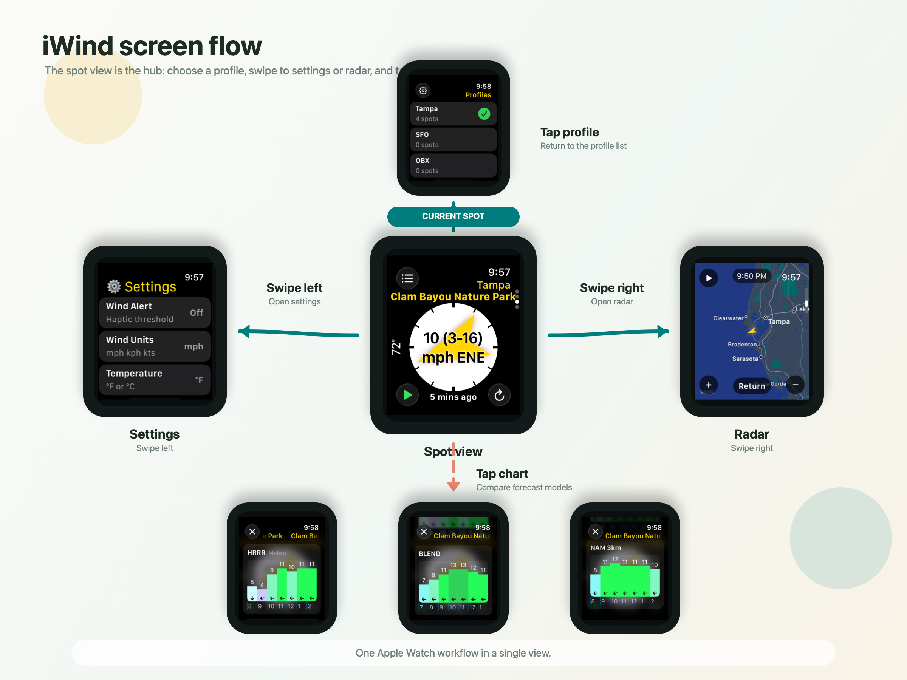

Start at the spot view
The main Apple Watch screen shows the selected spot with wind speed, direction, temperature, and the latest update age.
How To
The Apple Watch app is organized around the spot view. From there, a few simple gestures take you to profiles, settings, radar, and forecast charts.

The main Apple Watch screen shows the selected spot with wind speed, direction, temperature, and the latest update age.
Use the profile list to choose a favorites profile. The spot view updates to show the spots saved in that profile.
Swipe left from the spot view for settings such as wind units, temperature units, alerts, map centering, and background style. Swipe right for radar.
Open forecast charts from a spot to compare available models such as HRRR, Blend, and NAM 3k.
On iPhone, sign in, manage profiles, search for spots, add spots, remove spots, and sync settings back to Apple Watch.
Add a complication or widget so the selected spot remains visible without opening the app.